Öva spelreglerna inför provet
Öva fotbollens spelregler inför domarprovet: frågor med förklaring, övningsprov och dina fel samlade – på svenska och utan internet.
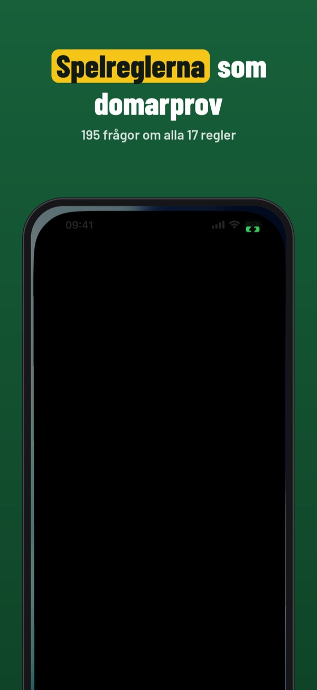
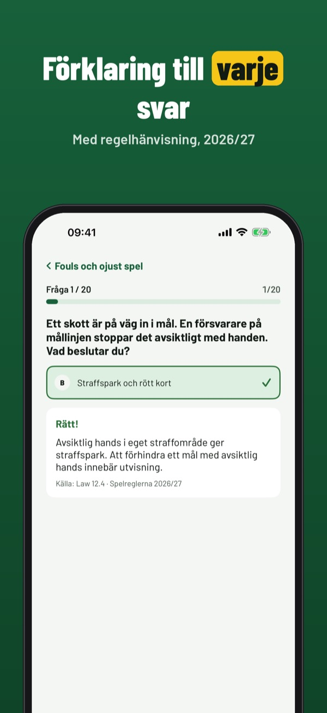
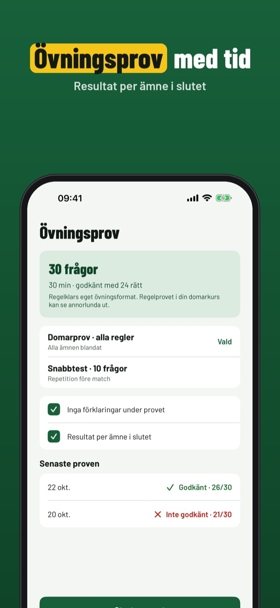
Regelklar hjälper dig att öva fotbollens 17 spelregler inför domarprovet – med egna frågor och tydliga förklaringar.
Du kan öva 20 frågor, ordlistan och checklistan utan köp. Fullversionen är ett engångsköp som låser upp alla frågor, övningsprov och statistik. Ingen prenumeration.
Regelklar är fristående och inte kopplad till SvFF, ÖFB eller IFAB. Frågorna är egna och återger inte regeltexten.
Terms of Use (EULA): https://www.apple.com/legal/internet-services/itunes/dev/stdeula/
Privacy: https://baytechbv.github.io/privacy/regeltest-eu/
Schiedsrichter-Regeln üben
Übe die Fußballregeln für den Schiedsrichter-Regeltest: Fragen mit Erklärung, Simulation und deine Fehler an einem Ort – auf Deutsch und offline.
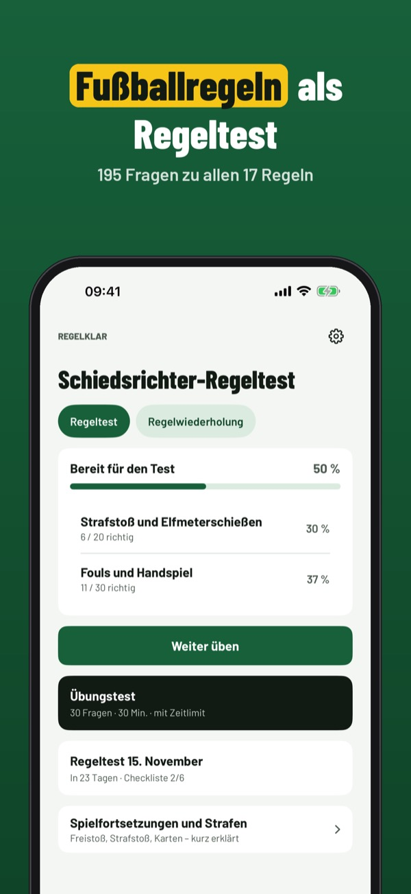
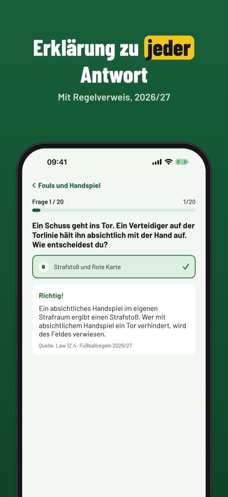
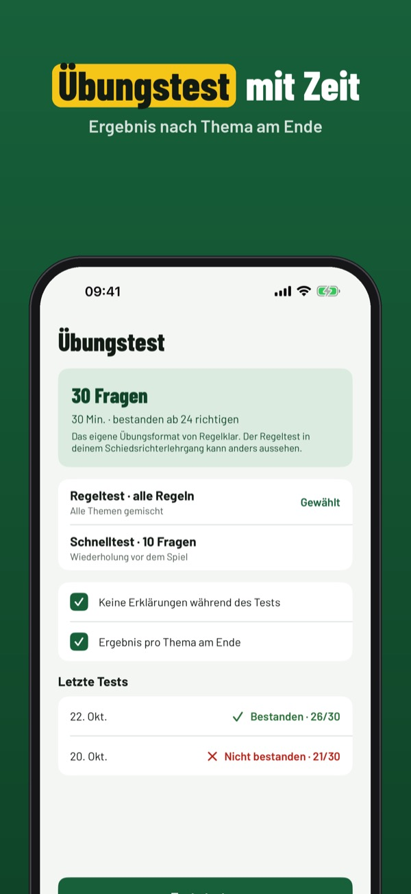
Regelklar hilft dir, die 17 Fußballregeln für den Schiedsrichter-Regeltest zu üben – mit eigenen Fragen und klaren Erklärungen.
20 Fragen, die Begriffe und die Checkliste kannst du ohne Kauf nutzen. Die Vollversion ist ein Einmalkauf und schaltet alle Fragen, Simulationen und die Statistik frei. Kein Abo.
Regelklar ist unabhängig und nicht mit ÖFB, DFB oder IFAB verbunden. Die Fragen sind eigene und geben den Regeltext nicht wieder.
Terms of Use (EULA): https://www.apple.com/legal/internet-services/itunes/dev/stdeula/
Privacy: https://baytechbv.github.io/privacy/regeltest-eu/
Oefen de voetbalregels
Oefen de voetbalregels voor je spelregelbewijs of scheidsrechtersexamen: vragen met uitleg, proefexamens en je fouten op één plek – offline.
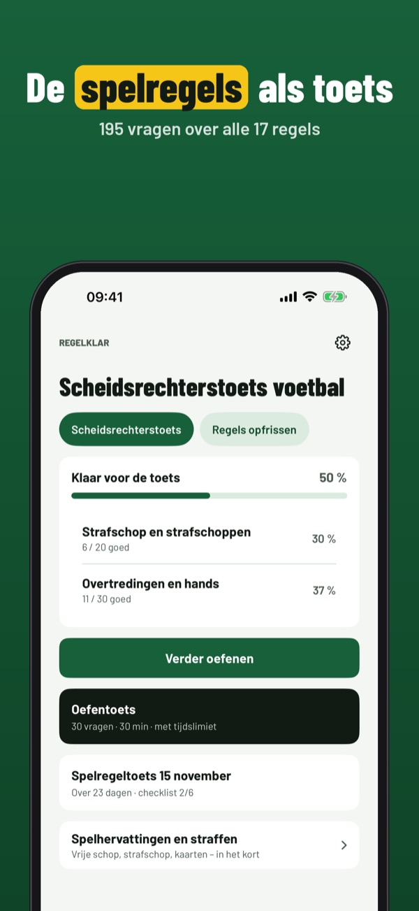
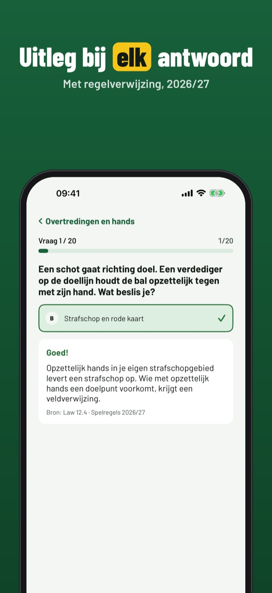
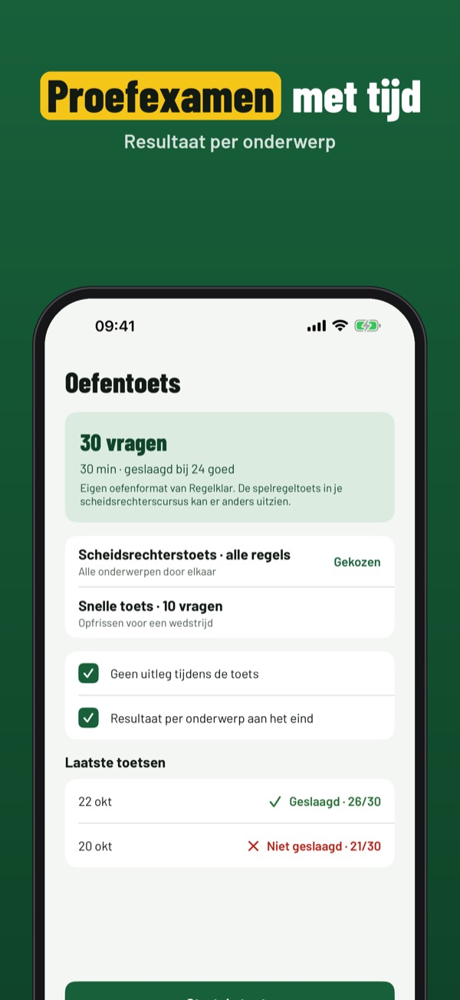
Regelklar helpt je de 17 voetbalregels te oefenen voor je spelregelbewijs of scheidsrechterscursus – met eigen vragen en duidelijke uitleg.
Je kunt 20 vragen, de begrippenlijst en de checklist zonder aankoop gebruiken. De volledige versie is een eenmalige aankoop die alle vragen, proefexamens en statistiek ontgrendelt. Geen abonnement.
Regelklar is onafhankelijk en niet verbonden aan de KNVB of IFAB. De vragen zijn eigen vragen en geven de regeltekst niet weer.
Terms of Use (EULA): https://www.apple.com/legal/internet-services/itunes/dev/stdeula/
Privacy: https://baytechbv.github.io/privacy/regeltest-eu/
Øv på fotballreglene
Øv fotballreglene til dommerprøven: spørsmål med forklaring, prøvetester og feilene dine samlet – på norsk og uten nett.
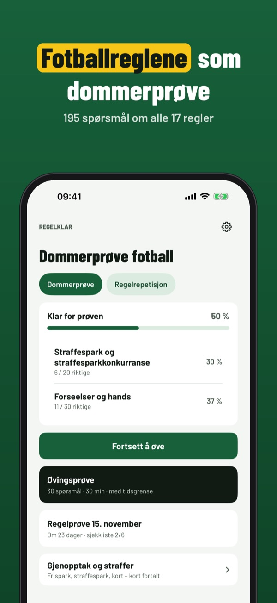
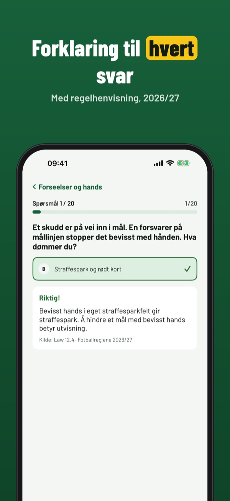
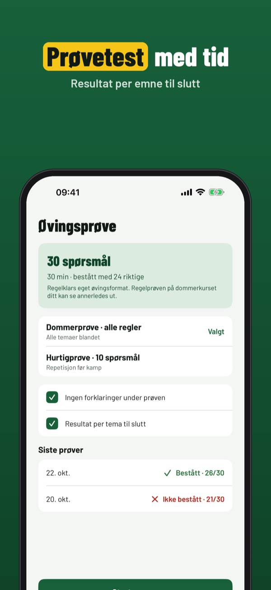
Regelklar hjelper deg å øve de 17 fotballreglene til dommerkurset – med egne spørsmål og tydelige forklaringer.
Du kan øve på 20 spørsmål, ordlisten og sjekklisten uten kjøp. Fullversjonen er et engangskjøp som låser opp alle spørsmål, prøvetester og statistikk. Ingen abonnement.
Regelklar er uavhengig og ikke tilknyttet NFF eller IFAB. Spørsmålene er egne og gjengir ikke regelteksten.
Terms of Use (EULA): https://www.apple.com/legal/internet-services/itunes/dev/stdeula/
Privacy: https://baytechbv.github.io/privacy/regeltest-eu/
Testy z przepisów gry
Ćwicz przepisy gry w piłkę nożną przed egzaminem sędziowskim: pytania z wyjaśnieniem, testy próbne i twoje błędy w jednym miejscu – offline.
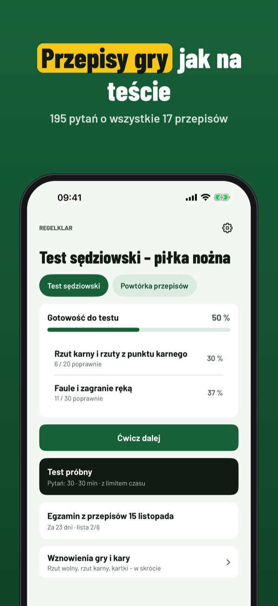
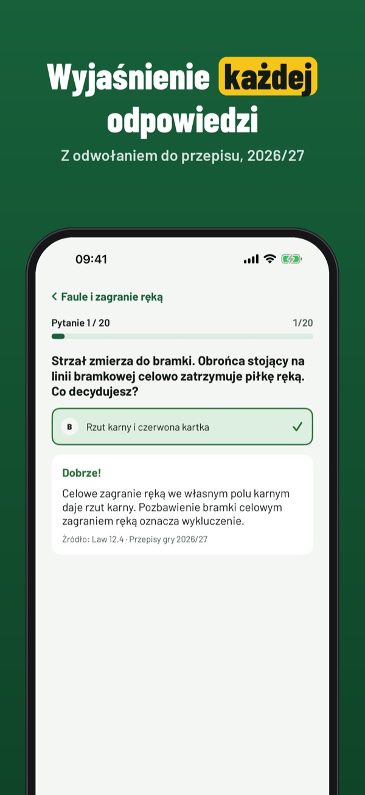
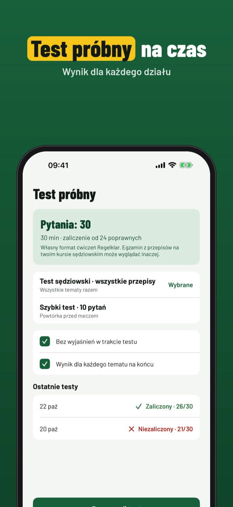
Regelklar pomaga ćwiczyć 17 przepisów gry w piłkę nożną przed kursem sędziowskim – z własnymi pytaniami i jasnymi wyjaśnieniami.
20 pytań, słownik i listę kontrolną możesz używać bez zakupu. Pełna wersja to jednorazowy zakup, który odblokowuje wszystkie pytania, egzaminy próbne i statystyki. Bez subskrypcji.
Regelklar jest niezależny i niepowiązany z PZPN ani IFAB. Pytania są własne i nie powielają tekstu przepisów.
Terms of Use (EULA): https://www.apple.com/legal/internet-services/itunes/dev/stdeula/
Privacy: https://baytechbv.github.io/privacy/regeltest-eu/